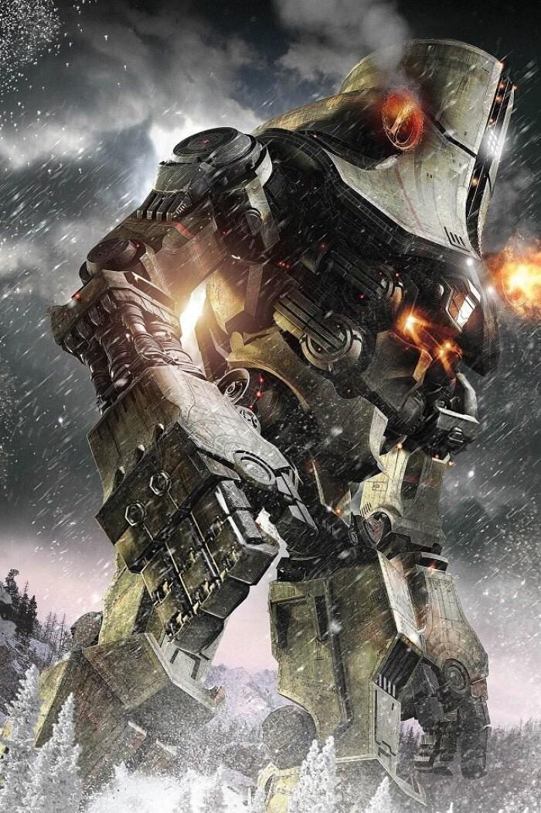
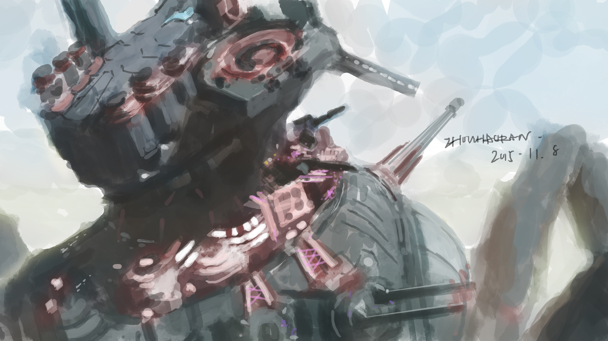

“机甲文化”：从小众到大众的进击之路
 在这里，我们首先对“机甲文化”与“机器人文化”做一个简单的概念梳理。机甲是科幻的一个分支，归根结底是一种艺术想象；而机器人则是现实主义的体育竞技，“机器人可以通过技术将想象呈现出来，是从科幻到现实的一种映射，展现了一种现代人的技术自信。” 《铁甲雄心》的联合出品方，创客星球的CEO茹晨在接受媒体采访时这样区分了二者的不同。而在更深层次上，机甲（Mecha）是人身体的延伸，是人的力量、智慧、勇敢、情感的外化与扩展，肯定与赞美的是人本身，这一点也与机器人（Robot）强调机器智慧有所区别，这一区别也是机甲文化内涵中颇为重要的一点。
中文的“机甲”一词来源于日语中的“メカ”，英语里称为Mecha，是Mechanism和Mechanical的缩写，一般是指出现在科幻或超现实影视、游戏和小说作品中，由人类操作的大型战斗机器人，例如我们熟知的高达就是机甲的典型代表。
值得注意的是，无论在欧美还是在国内，“机甲文化“与“机器人文化”的消费群体在很大程度上都是重合的。说到底，二者都包含了大众对于未来科技的理解与想象，热爱和情感寄托，机器人更是将科幻的“机甲”想象照进现实。因此，我们今天就透过国内机器人格斗真人秀的涌现，来一探“机甲文化”的起步和发展，看看“机甲文化”是否能真正融入中国年轻群体的文化生活中。
机甲文化的源起与衍生发展
 谈起机甲文化的起源，不得不从日本的机器人动画作品说起。20世纪50年代末，作为“巨人机器人”动画始祖，《铁人28号》中那个被人类操纵着的巨大人形机器人奠定了后世“机甲”的基础。1972年，从日本漫画家永井豪创作的《魔神Z》开始，机器人进一步摆脱了被遥控的操作方式，而是由驾驶员真正进入体内进行驾驶，“机器人动画”也真正开始成为一个完整的动画品类。在《魔神Z》之后又陆续出现了《机动战士高达》《EVA新世纪福音战士》等经典作品，进一步完善了机甲动画作品品类的完整性。而机甲战士也早已成为日本流行文化的标志性符号。
除了日本，美国也对机甲文化的形成与发展有着重要贡献。首当其冲的就是著名科幻大师罗伯特•安森•海因莱因所著的《星船伞兵》。这部与《铁人28号》同时代出版的科幻小说讲述了在遥远的未来，人类和虫族之间的战争，其中许多设定，如轨道空降舱、动力装甲等内容，仍然持续影响着各种科幻机甲作品的创作。
机甲文化发展到今天，种类已经异常丰富，根据不同的标准可以划分成不同的类别。例如根据风格和设定，可以大体分类为超级系与真实系。
超级系
顾名思义，超级系机甲普遍拥有远超现实的能力，其外观、构造、动力来源、设定等诸多方面都脱离于现实，设定的基础是幻想而并非科学。《魔神Z》《盖塔机器人》《传说巨神伊迪安》《勇者凯撒》等都可以划进这个范畴。
真实系
真实系机甲中的大部分设定都参考了现实的科技原理，这类作品中出现的质量武器、电磁炮、机体能源、操作方式等多数内容都可以在现实中实现，即使存在一些超脱于现实的科幻设定，但总体基本都还能自圆其说。《机动战士高达》系列就是这类机甲作品的代表。
其实还有一些作品则混合了超级系与真实系两种作品的特质，如《新世纪福音战士》就混合了两类作品的特点。此外，还可以根据控制机甲的方式和机甲基础形态来对其进行分类。
机甲文化除了从横向发展出不同的系列类别外，还在纵向衍生出了机甲游戏、动漫、音乐、小说等多个领域。一些经典的机甲IP也通过全产业链的“IP流转”在各个领域扩大影响力。例如高达就曾推出了自己的《高达VS》系列游戏，颇受玩家欢迎。而这股日益成熟的机甲文化也开始慢慢从日本及欧美流行到了世界各地。